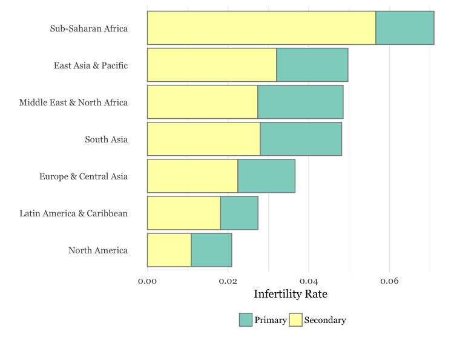
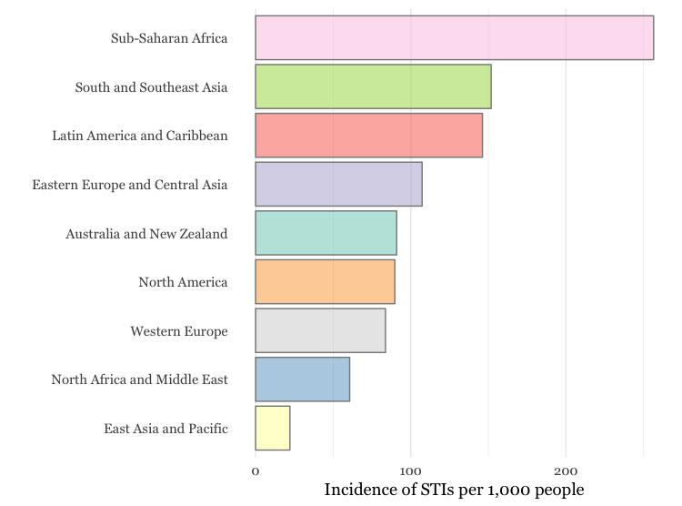
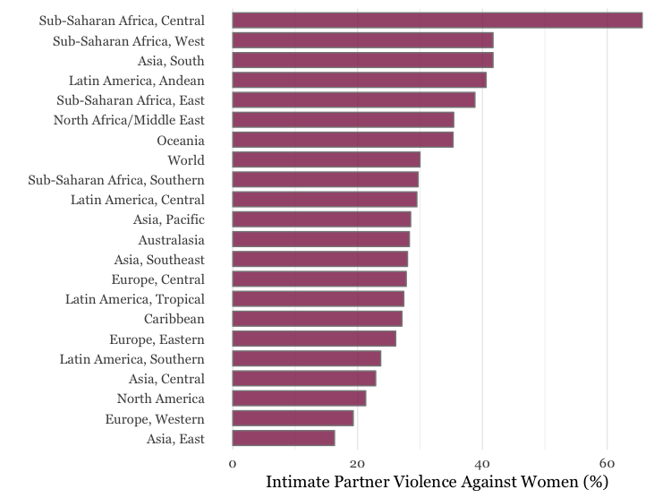

In Regions With High Fertility Rates, Infertility Rates are Also High. So Are the Consequences.
The total fertility rate in sub-Saharan Africa is one of the highest in the world, standing at 5.1 births per woman, and as a result, more than half of global population growth between now and 2050 is expected to occur in Africa. Infertility rates in sub-Saharan Africa are also some of the highest globally, with as many as 19-26% of women in select countries of Africa experiencing infertility, compared to a worldwide prevalence of around 8-12%.
As birth rates decline in many Western countries, in some cases below replacement levels, advanced technology is being developed and scaled to support couples experiencing infertility. However, in the developing world, such services are rare or nonexistent, and reproductive health programs focus primarily on equipping women with information and resources to delay childbearing.
Yet, the correlation between fertility and infertility rates found in Sub Saharan Africa is mirrored across the world, meaning that countries with high birth rates tend to have higher infertility, and vice versa. Consequently, countries with the greatest burden of infertility have the least capacity to address it.
The Relationship Between Fertility and Infertility Rates Globally
Source: Fertility Data: World Bank. Infertility Data: PLoS Med. Estimates for 2010.
The implications of this trend are significant, since in many traditional societies women are expected to fulfill their marital commitment through motherhood, and by doing so, gain access to a range of reciprocal benefits within their communities, such as security in old age. Higher prevalence of infertility may actually play a role in high birth rates in these contexts, where preferences for a large family correspond with stigma towards infertility. This stigma and the resulting fear of being infertile create social pressure for women to demonstrate their ability to bear children early in their marriage.
Prevalence of Primary and Secondary Infertility by Region

Source: “National, Regional, and Global Trends in Infertility Prevalence Since 1990: A Systematic Analysis of 277 Health Surveys.” PLoS Med. Estimate for 2010.
Infertility is classified in two ways. Primary infertility is defined as being unable to achieve a live birth after several years of trying (the number of years varies by definition, but is specified as five years in the graph above). Secondary infertility is defined as being unable to conceive a second child after previously giving birth. One of the main causes of infertility is genital tract infections, which are transmitted or acquired during sex, septic delivery, unsafe abortion, or harmful traditional practices. This partly explains why the developing world has higher rates of infertility, as there is a greater risk of these conditions.
In fact, the World Health Organization estimates that as many as 85% of instances of infertility within Sub-Saharan Africa can be attributed to genital tract infections, which include sexually transmitted infections (STIs). These infections are preventable. Yet, many cultures in Sub-Saharan Africa believe in supernatural causes for childlessness, or are influenced by widespread misconceptions such as the belief that contraception use leads to permanent infertility.
STI Rates Across Regions

Source: “Classification of incidence and prevalence of certain sexually transmitted infections by world regions.” Estimate of annual new cases of chlamydia, gonorrhea, trichomoniasis, and syphilis per 1,000 25-49 year olds for the period 1990-2006.
The proportion of women reporting access to modern methods of contraception can be understood as a proxy measure for access to reproductive health services more generally. In regions where a higher number of women report having their family planning needs met, infertility rates are lower. Having access to reproductive health care means lower rates of sexually transmitted infections, and less instances of unsafe abortions and childbirth.
The Relationship Between Family Planning Services and Infertility Rates
Source: World Health Organization. Married or in-union women of reproductive age who have their need for family planning satisfied with modern methods. Estimates from 2010-2015.
When investigating causes of infertility, it’s important to acknowledge the proportion of cases attributable to men. It can be hard to accurately measure male infertility rates due to a lack of data collection as well as underreporting, yet the most commonly cited estimate finds that about 50% of infertility cases are due to a solely female factor, while a pure male factor accounts for 20-30% of the problem, and the remaining 20-30% is due to a combination of both male and female factors. In developing countries, male infertility may account for closer to half of all cases, often resulting from untreated varicocele and exposure to environmental toxins.
Source of Infertility Diagnosis Within Couples Globally
Source: “Best practices for male infertility.” Fertility Sterility Journal. 2002.
Although male infertility plays a significant if not equal role in cases of childlessness, a woman’s failure to become pregnant is more visible, and so where the medical causes of infertility are less understood, the burden of blame generally rests on the female. Childless women face varying degrees of stigmatization and the repercussions of infertility can include denial of a proper burial, loss of inheritance rights as a widow, and being seen as possessed by evil spirits or as the recipient of punishment from God. In addition to the feelings of guilt, grief, and isolation that can accompany infertility, many women must also cope with public shaming. Regions with the highest rates of infertility also have some of the highest rates of intimate partner violence, leaving infertile women in these areas particularly at risk for abuse.
Intimate Partner Violence by Region

Source: World Health Organization. Estimate for 2010.
Jackline Mwende, a young woman from Kenya who is a victim of infertility stigma. She is currently being supported by an initiative called “More Than A Mother”.

Given these trends, health and education systems within developing countries, can benefit by taking a broader scope to offer diagnosis, prevention, counseling and treatment services for infertility, as well as a safe forum to explore and reimagine community expectations surrounding gender.
Reproductive health services should help women achieve their desired fertility status, as defined by the women themselves. This includes infertility treatment, even in areas where population growth is a concern. In regions where expanding treatment services such as assisted reproductive technologies or in vitro fertilization will take a long time, increasing families’ access to information about how to prevent infertility and cope with unresolved childlessness can reduce the stigma and associated negative impacts on women.